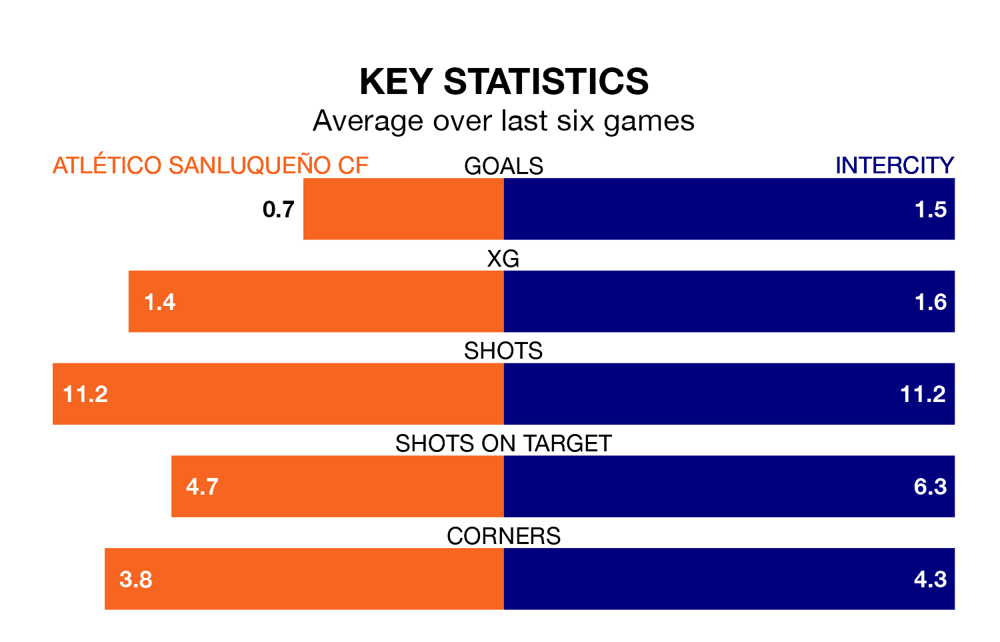

Intercity travel to the Estadio El Palmar looking to secure a first win in six Primera Division RFEF Group 2 games against Atlético Sanluqueño CF on late Sunday.
Intercity have lost two and drawn three matches since they last earned three points – against Ceuta on December 10.
They face an Atlético Sanluqueño side who have won one and drawn two over that time.
With 23 goals in 21 games so far this season, Atlético Sanluqueño are scoring at the league's average rate with 1.1 goals per game. And they are conceding more than average, letting in 26 goals at a rate of 1.2 per game.
Intercity are also average scorers, with 1.1 goals per game. They have also conceded 1.1 goals per game.
The home side are 15th in the table after 21 games, of which they have won five and drawn seven, earning 22 points.
The visitors are seven places ahead of Atlético Sanluqueño in eighth, with seven wins and eight draws putting them on 29 points.
Atlético Sanluqueño's last match was on January 28, a 0-0 draw against CD Atlético Baleares.
Intercity lost 1-0 against UD Ibiza last time out, also on January 28.
Updated: 15:45 (UTC), 02/02/24